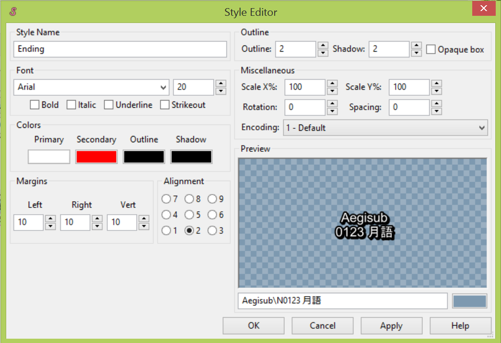

The Style Editor
You use Style Editor to create a new style or edit an existing style. The Style Editor has a WYSIWYG (what you see is what you get) user interface. When you change the parameters of a style, you can see exactly what your subtitles look like.
To open the Style Editor, you need to open the Styles Manager first. Then you click the New button or Edit button in the Styles Manager.
The style editor displays.

Style Name: You type your style name in the Style Name field. You may use different styles for the beginning, the ending, or voice over for your video. You can give meaningful names for different styles.
Font: You select the font family and font size of the style.
Check boxes: You can set the subtitles to be bold, italic, underline, or strikeout by checking the boxs beside Bold, Italic, Underline, or Strikeout.
Margin and alignment: You can define the position and margins for subtitles on the video.
Outline: You define the width for the outline and shadow. You can also select weather the subtitles are opaque or not.
Miscellaneous: You can change the scale in X direction, the scale in Y direction, and the angle of the subtitle text. You can also set the space between characters.
Encoding: You can select character encoding format from the drop-down list. (note: A character encoding is a way to convert text data into binary numbers.)
Preview area: You can see the exact result when you change parameters in the Style Editor.In the text field under the preview area, you can type the sample subtitles. The color rectangular beside the text field is for you to set the background color for the sample subtitles.
Click Cancel to close the Style Editor without saving your changes.
Click Apply to apply your changes to subtitle lines that use the style.
Click OK to save your changes and close the Style Editor.